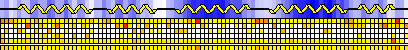

PROCHECK v.3.5
Programs to check the Stereochemical Quality of Protein Structures

Operating manual

Roman A Laskowski, Malcolm W MacArthur, David K Smith, David T Jones, E Gail Hutchinson, A Louise Morris, David S Moss & Janet M Thornton
April 1998

 PROCHECK Home Page (at UCL)
PROCHECK Home Page (at UCL)